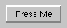
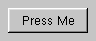

The QPushButton widget provides a push button with a text or pixmap label. More...
#include <qpushbutton.h>
Inherits QButton.
The push button (command button in Windows parlance) is perhaps the most central widget: Push it to command the computer to perform some action.
Being so central, the widget has grown to accomodate a great many variations in the past decade, and by now the "comand button" chapter of the Microsoft style guide shows about ten different states of Windows push buttons, and the text implies that there are dozens more when all the combinations of features are taken into consideration.
The most important modes or states are, sorted roughly by importance:


In Qt, the QButton class provides most of the modes and other API, and QPushButton provides GUI logic. See QButton for more information about the API.
See also: QRadioButton, QToolButton, GUI Design Handbook: Push Button and Microsoft Style Guide
Examples: xform/xform.cpp layout/layout.cpp drawdemo/drawdemo.cpp popup/popup.cpp qmag/qmag.cpp rot13/rot13.cpp scrollview/scrollview.cpp customlayout/main.cpp
Constructs a push button with no text.
The parent and name arguments are sent to the QWidget constructor.
Constructs a push button with a text.
The parent and name arguments are sent to the QWidget constructor.
Returns TRUE if the button is an auto-default button.
See also: setAutoDefault().
[virtual protected]Draws the push button, except its label.
See also: drawButtonLabel().
Reimplemented from QButton.
[virtual protected]Draws the push button label.
See also: drawButton().
Reimplemented from QButton.
[virtual protected]Handles focus in events for the push button.
Reimplemented from QWidget.
[virtual protected]Handles focus out events for the push button.
Reimplemented from QWidget.
Returns TRUE if the button is default.
See also: setDefault().
Returns TRUE if this button indicates to the user that pressing it will pop up a menu, and FALSE otherwise. The default is FALSE.
See also: setIsMenuButton().
Reimplements QWidget::move() for internal purposes.
Reimplements QWidget::move() for internal purposes.
Examples: drawdemo/drawdemo.cpp
Reimplements QWidget::resize() for internal purposes.
Reimplements QWidget::resize() for internal purposes.
Examples: drawdemo/drawdemo.cpp
[virtual]Sets the push buttons to an auto-default button if enable is TRUE, or to a normal button if enable is FALSE.
An auto-default button becomes the default push button automatically when it receives the keyboard input focus.
See also: autoDefault() and setDefault().
[virtual]Sets the button to be the default button if enable is TRUE, or to be a normal button if enable is FALSE.
A default push button in a dialog emits the QButton::clicked() signal if the user presses the Enter key. Only one push button in the dialog can be default.
Default push buttons are only allowed in dialogs.
See also: isDefault(), setAutoDefault() and QDialog.
[virtual]Reimplements QWidget::setGeometry() for internal purposes.
Examples: popup/popup.cpp qmag/qmag.cpp
[virtual]Reimplements QWidget::setGeometry() for internal purposes.
[virtual]Tells this button to draw a menu indication triangle if enable is TRUE, and to not draw one if enable is FALSE (the default).
setIsMenuButton() does not cause the button to do anything other than draw the menu indication.
See also: isMenuButton().
[virtual slot]Switches a toggle button on if enable is TRUE or off if enable is FALSE.
See also: isOn(), toggle(), toggled() and isToggleButton().
Examples: qmag/qmag.cpp
[virtual]Returns a size which fits the contents of the push button.
Reimplemented from QWidget.
[virtual]Specifies that this widget may stretch horizontally, but is fixed vertically.
Reimplemented from QWidget.
[slot]Toggles the state of a toggle button.
See also: isOn(), setOn(), toggled() and isToggleButton().
Search the documentation, FAQ, qt-interest archive and more (uses
www.troll.no):
This file is part of the Qt toolkit, copyright © 1995-99 Troll Tech, all rights reserved.
| Copyright © 1999 Troll Tech | Trademarks | Qt version 2.0.1
|